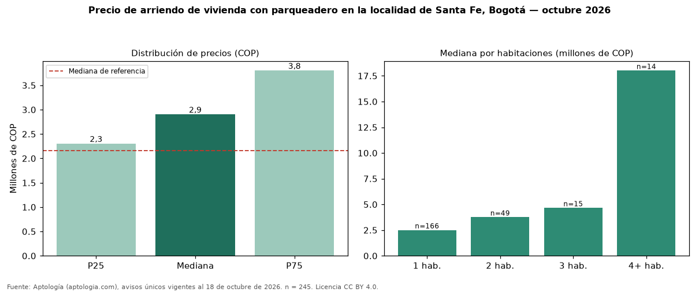

Precio de arriendo de vivienda con parqueadero en la localidad de Santa Fe, Bogotá — octubre 2026
Con 245 avisos únicos, el canon mediano de vivienda con parqueadero en arriendo en la localidad de Santa Fe, Bogotá es COP 2.900.000 al mes. Eso es 34 % más que la mediana de toda la oferta de arriendo en la localidad de Santa Fe, Bogotá (COP 2.162.225). Frente a los avisos sin parqueadero del mismo grupo (COP 1.900.000, n = 247), la diferencia es de +53 %; por metro cuadrado, −7 %. En todo Bogotá, la misma combinación tiene mediana COP 5.527.000 (−48 %). Por metro cuadrado, la mediana es COP 56.635/m² (−3 % frente a COP 58.333/m²), puesto 2 de 11 localidades comparables. Cruzando con la oferta de venta equivalente, la rentabilidad bruta implícita es 7,5 % anual. Por habitaciones: 1 habitación, COP 2.500.000 (n = 166); 2 habitaciones, COP 3.750.000 (n = 49); 3 habitaciones, COP 4.650.000 (n = 15); 4 o más habitaciones, COP 18 millones (n = 14). Datos abiertos CC BY 4.0 de Aptología; fuente y búsqueda de inmuebles: https://www.aptologia.com/arriendo-zona/bogota/localidad-santa-fe. Archivos: PDF de 2 páginas, CSV con las cifras y gráfica PNG.

| Avisos únicos | 245 |
|---|---|
| Percentil 25 | COP 2.300.000 |
| Mediana | COP 2.900.000 |
| Percentil 75 | COP 3.800.000 |
| Mediana por m² | COP 56.634 |
Fuente: avisos vigentes de portales inmobiliarios recopilados por Aptología, deduplicados (mínimo 30 avisos únicos por celda). Precios pedidos, no cerrados. Fecha: 2026-10-18.